Sylvan
Интернет-магазин

Описание
Sylvan — это бренд органического яблочного сидра, в котором подлинное мастерство играет важную роль, а сезонность проявляется на всех этапах, начиная от сбора фруктов и заканчивая разливом напитков по банкам.
Мои обязанности
- Брендинг
- Дизайн Упаковки
- UX Исследование
- Информационная Архитектура
- Вайрфреймы
- Прототипы
Год
- 2021
Теги
- веб дизайн
- 2021
Главный логотип
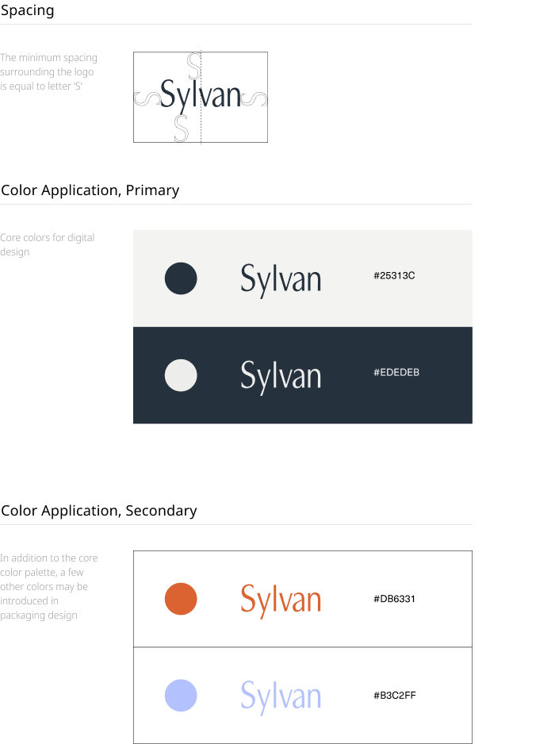
Упаковка
Три дизайна упаковки, а также дизайн специального ежегодного издания посвящены сбору трех основных урожаев яблок в году: раннему, среднему и позднему.


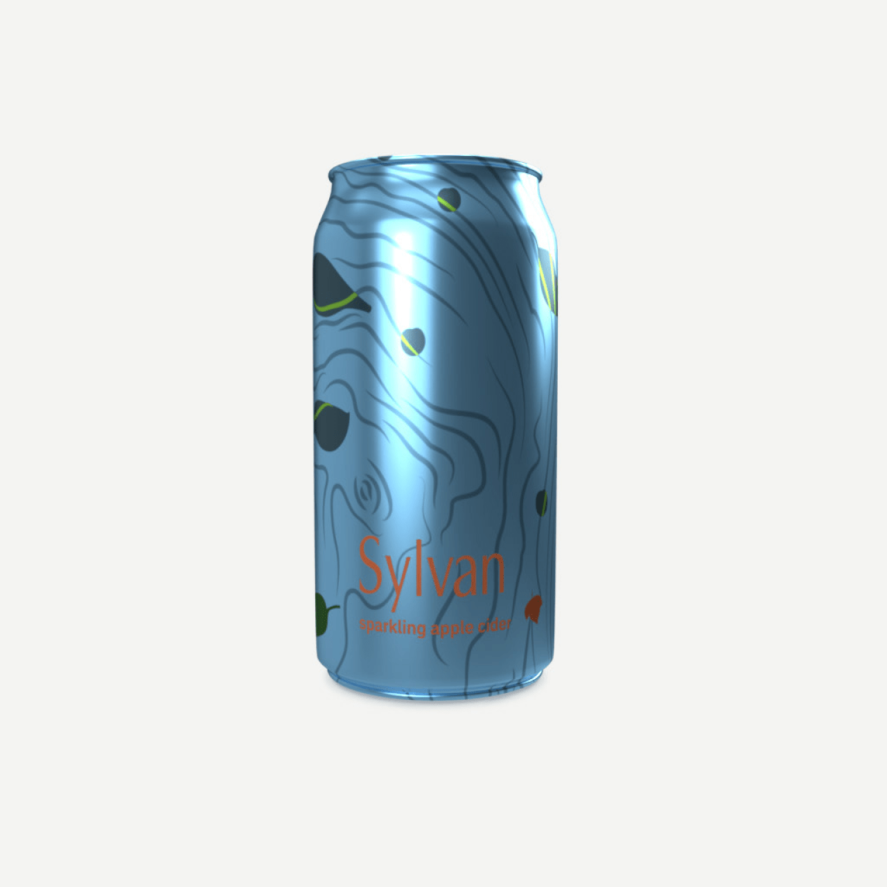
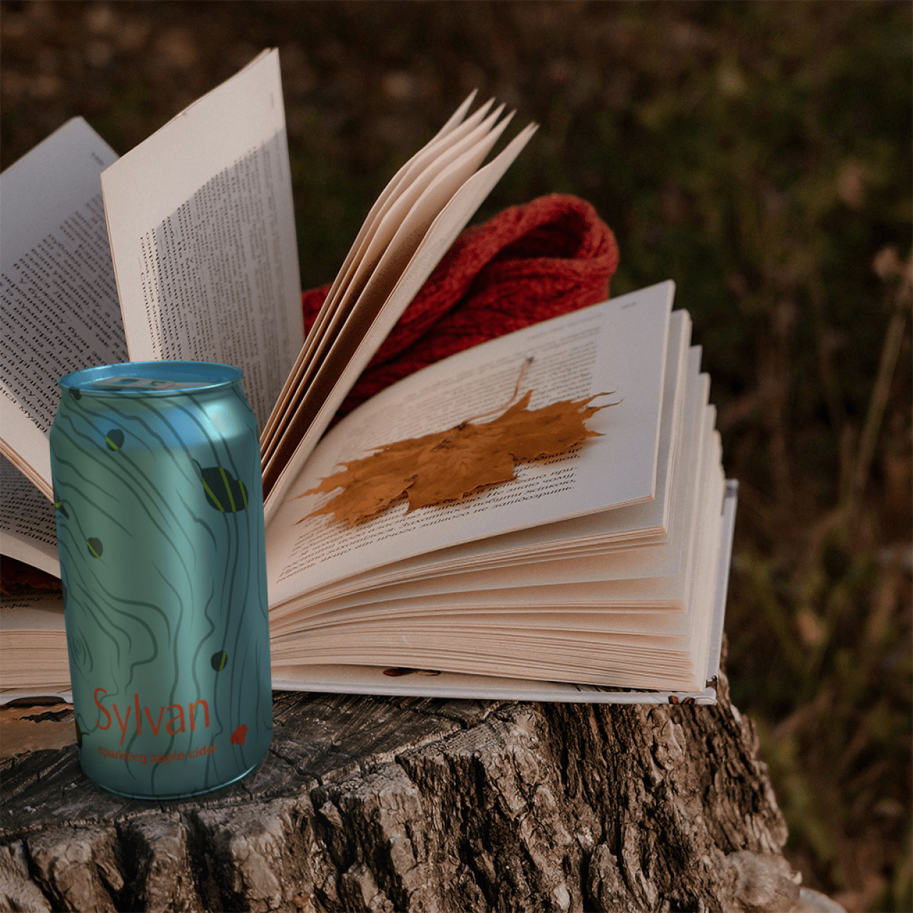
Помимо упаковки из двенадцати сортов яблочного сидра, специальное ежегодное издание включает в себя толстовку с капюшоном и сумку тоут.


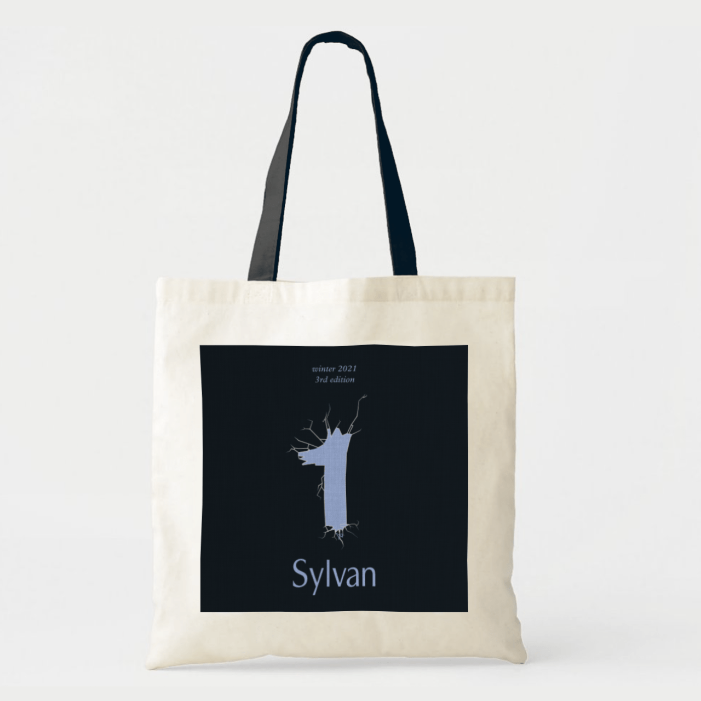
Вебсайт
Основная цель создания вебсайта заключалась в том, чтобы расширить узнаваемость бренда за пределами региона и увеличить охват клиентов за счет запуска интернет-магазина.
Карта Сайта
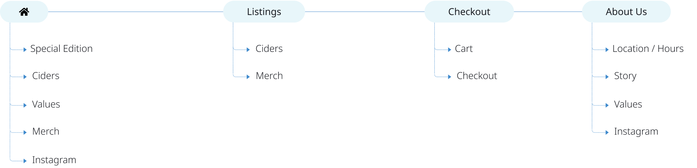
Вайерфреймы
Лендинг Страница
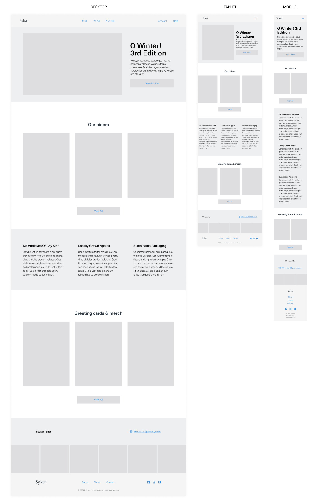
Листинг Страница
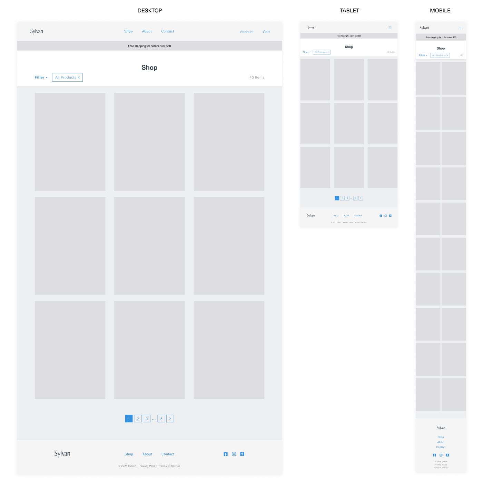
Страница Продукта
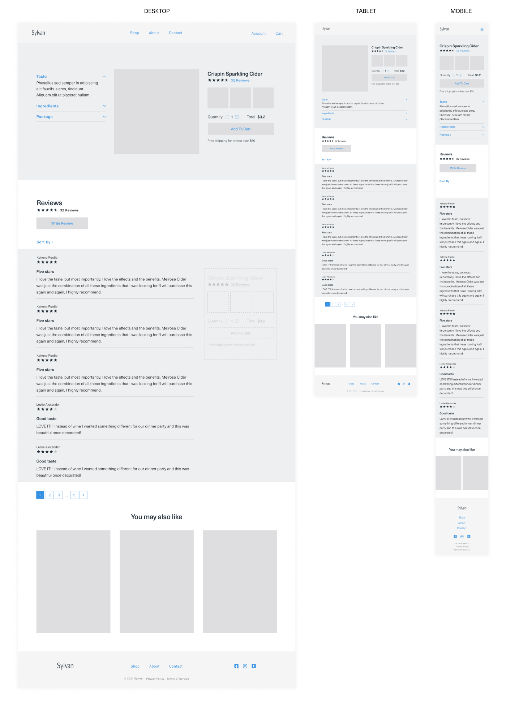
Меню корзины и страница оформления заказа
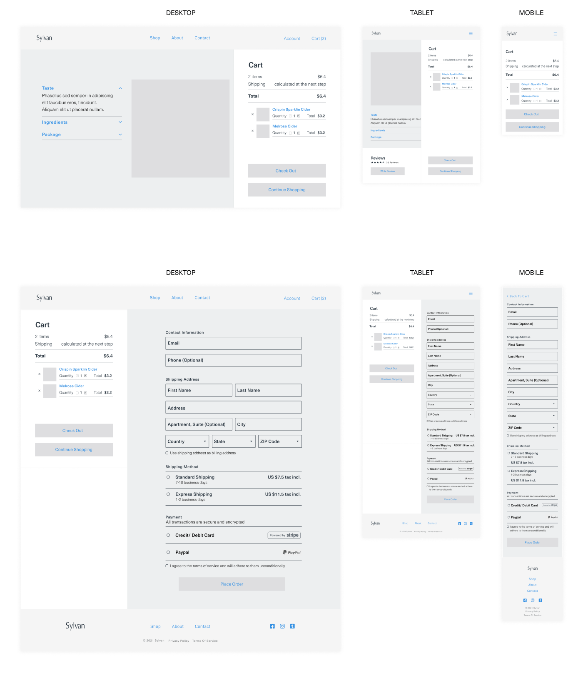
Руководство По Стилю
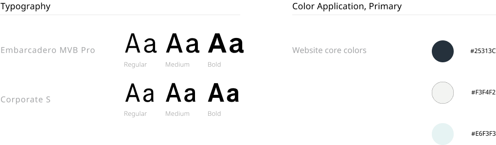
Отзывчивая Верстка
Лендинг Страница
УТП Sylvan заключается в производстве превосходного продукта, которое не наносит вреда окружающей среде и в ходе которого используются только свежие местные ингредиенты и полностью перерабатываемая упаковка. Процесс брожения не пытаются ускорить, так как он играет важную роль в насыщенности и глубине вкуса конечного напитка. В результате весь производственный цикл может занять до года в зависимости от времени сбора урожая и сорта яблок.
Сильная связь с природой и течением времени — вот что делает этот бренд по-настоящему уникальным. Это ощущается в каждой детали: от визуального контента сайта, дизайна упаковки и описания продуктов до логотипа, этимология которого относится к лесам.

Поскольку ассортимент продуктов относительно небольшой, я решила не использовать категории продуктов и показать несколько товаров на лендинг странице с CTA, который направляет клиентов на листинг страницу с удобной функцией фильтрации.
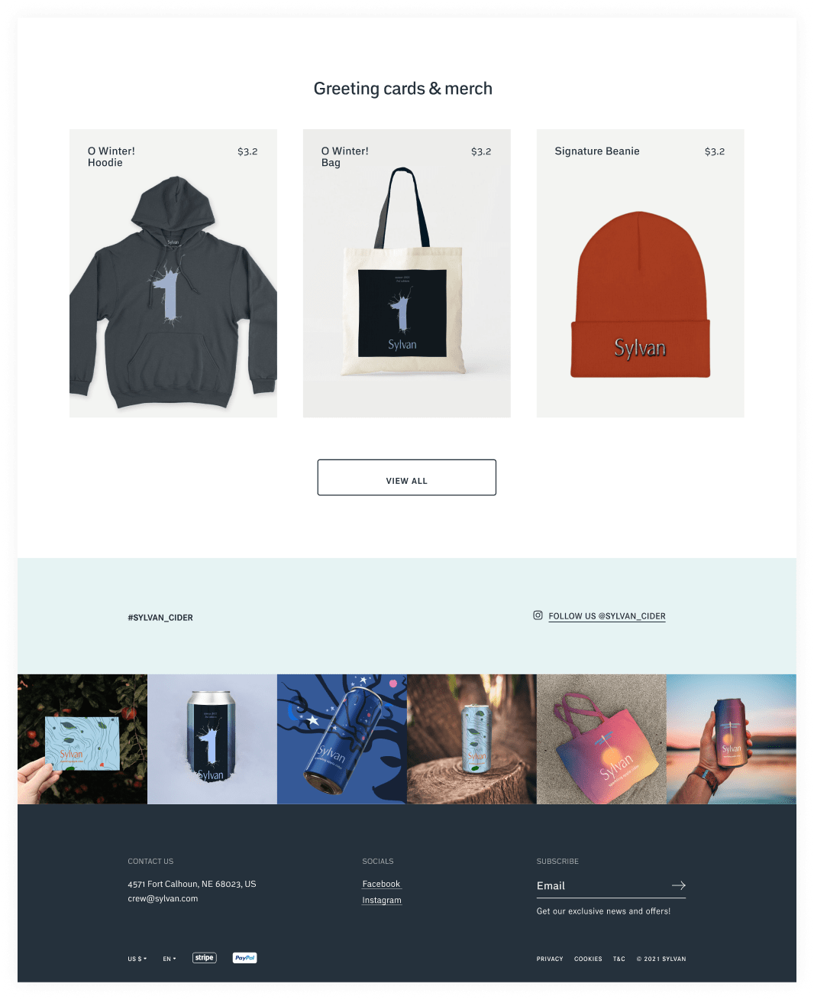
Листинг Страница
Большие превью продуктов с лаконичным описанием отображаются при наведении курсора, что дает пользователям достаточно понимания какой вариант соответствует их потребностям.
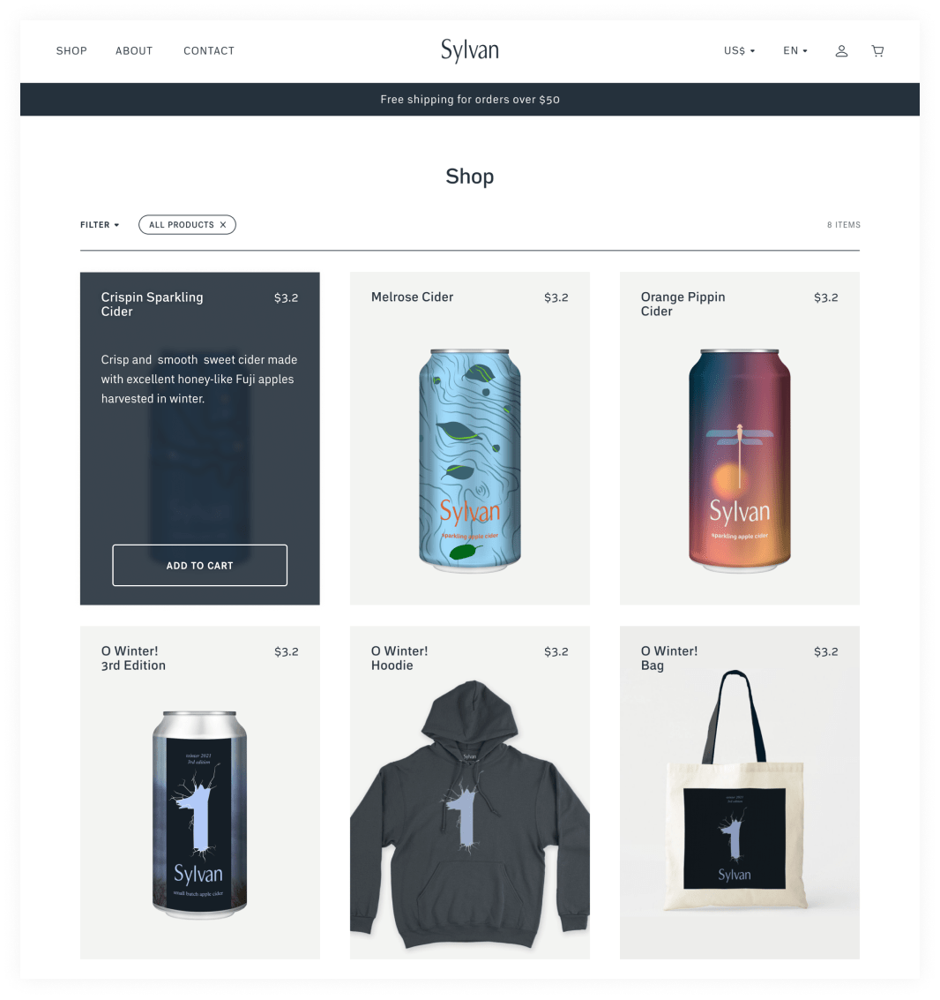
Страница Продукта
Здесь пользователь может узнать больше о продукте, просматривая характеристики и отзывы. Sticky контейнер справа позволяет пользователям сразу добавить товар в корзину, когда они примут решение.
Процесс Оформления Заказа
Ключевая информация, такая как изображение, название, количество и стоимость товаров, отображается в меню корзины справа. После добавления товаров в корзину пользователь может проверить и внести изменения в свой заказ, если это необходимо.

Общая стоимость рассчитывается после выбора способа доставки.
Процесс оформления заказа состоит из двух столбцов: корзина слева, где пользователи всегда могут видеть содержимое своего заказа, и форма оформления заказа справа.